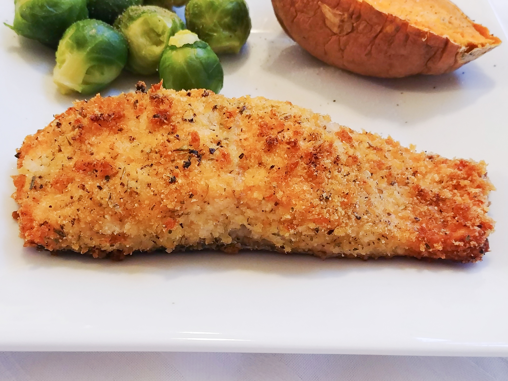

Lemon Panko Crusted Salmon

Description
I love serving this salmon with a side of glazed baby carrots and garlic feta mashed potatoes. It's a quick, yet healthy meal that will satisfy your hunger.
Ingredients:
- 6 tablespoons panko bread crumbs
- 1 tablespoon grated Parmesan cheese
- ½ teaspoon lemon pepper
- ½ teaspoon dried thyme
- ½ teaspoon dried parsley
- ⅛ teaspoon granulated garlic
- ⅛ teaspoon lemon zest
- 2 (4 ounce) salmon fillets
- 1 tablespoon butter, melted
Steps:
- Preheat oven to 375 degrees F (190 degrees C). Line a baking sheet with aluminum foil.
- Combine panko bread crumbs, Parmesan cheese, lemon pepper, thyme, parsley, granulated garlic, and lemon zest in a bowl. Arrange salmon on the prepared baking sheet and brush with melted butter. Sprinkle bread crumb mixture evenly over salmon fillets.
- Bake in the preheated oven until salmon flakes easily with a fork, 20 to 25 minutes.
Back to homepage